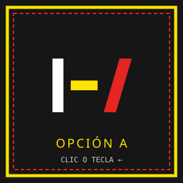
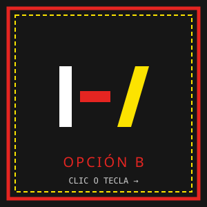

← Todos los Song Sorters
|-/ KWORB SPOTIFY DATASET |-/
TWENTY ONE PILOTS
SONG SORTER
Duelo N.º 1
0%

Opción A
Esperando inicio...
TWENTY ONE PILOTS
Song Sorter
¡Clic para Empezar!
Cargar
Progreso
Empate
Deshacer
Guardar Progreso
Cambiar Filtros
Generar URL
Descargar Imagen
Lista de Texto
Nuevo Ranking

Opción B
Esperando inicio...
99
canciones seleccionadas
|
~565 duelos estimados
Presets:
Estudio + Sencillos
Solo Estudio (7 discos)
Con Regional at Best
Todo Kworb (177)
Catálogo Completo (182)
Limpiar discos
Mostrar portadas en el resultado:
Ninguna (0)
Top 3
Top 5
Top 10
Top 20
Todas
Mostrar streams de Spotify (Kworb)
Lista de Texto
✕